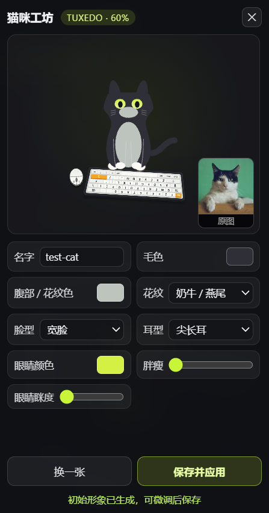
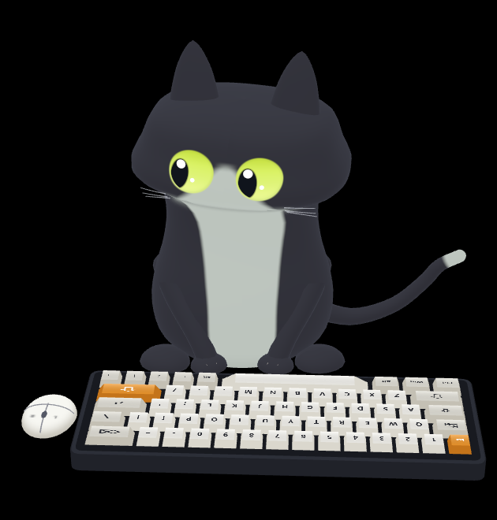
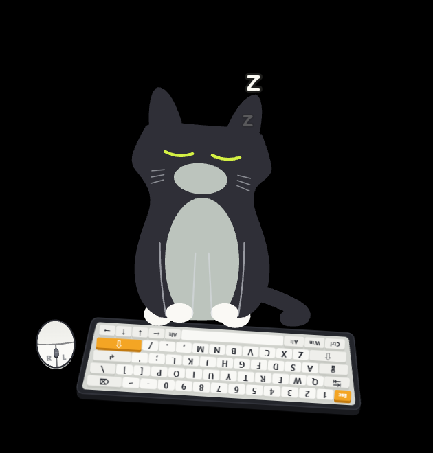
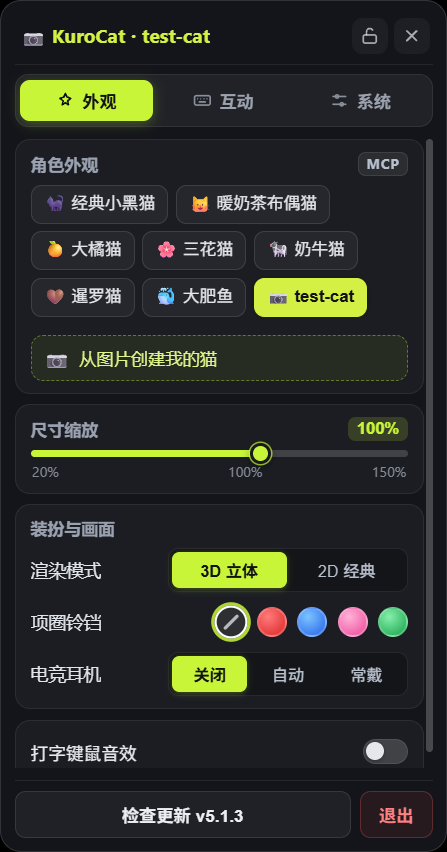

上传一张猫咪照片，本地分析出毛色、花纹、脸型、耳型、胖瘦与眼睛颜色， 生成一只会打字、会看向你的桌面宠物 —— 2D 与 3D 同时生效。 全程离线，图片不上传。

算法是「参数化复刻」：不是把照片贴上去，而是推断出一组外观参数，交给原有渲染器。
缩到 168px，做确定性 k-means，得到 6 个主色。
用外圈 15% 环带判断背景簇，绿墙、白墙、木桌都能剔掉。
推花纹（纯色/双色/燕尾/虎斑/三花/重点色）、眼睛与鼻子颜色。
由轮廓长宽比推脸型、耳型与胖瘦，生成可微调的配置。
八项参数随手改，改完即时预览，保存即换装。



最新版本：v5.2.0。安装包由 GitHub Actions 在三个平台原生构建。
Node 18+、Rust stable、Tauri 2 系统依赖。
npm ci npm run build npm run tauri:build -- --bundles nsis # Windows 安装包 # 网络受限时，让打包工具走镜像 $env:TAURI_BUNDLER_TOOLS_GITHUB_MIRROR = "https://gh-proxy.com/https://github.com"
npm run tauri:build 会打包 MSI 并从 GitHub 下载 WiX，网络受限时会以
failed to bundle project: timeout: global 失败 —— 此时 exe 其实已生成，加
--bundles nsis 即可绕开。